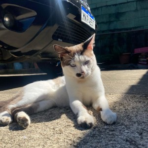

Dante
Dante é preguiçoso e folgado, mas com aquele charme irresistível que só os gatos têm de sobra!
Selecionamos grãos de produtores orgânicos e certificados, comprometidos com práticas sustentáveis. Também oferecemos opções de doces e salgados artesanais, feitos diariamente com ingredientes frescos e locais, para acompanhar o café que preparamos com tanto carinho.
No Miau & Café, acreditamos que cada xícara de café e cada ronronar de gato podem transformar o dia de uma pessoa. Nossa missão é oferecer uma experiência única que combine:
O Miau & Café nasceu como parte da aula de Desenvolvimento Web/UX do professor Luís na Católica-SC. O projeto foi criado para unir aprendizado, inovação e amor por gatos e café.
Nossos gatinhos que aquecem nossos corações em casa e no café são:
Dante é preguiçoso e folgado, mas com aquele charme irresistível que só os gatos têm de sobra!
Sim! Periodicamente realizamos eventos de adoção responsável. No entanto, os gatos que vivem permanentemente no café não estão disponíveis para adoção, pois já encontraram seu lar aqui conosco.
Aos finais de semana recomendamos reserva, especialmente para grupos maiores que 4 pessoas. Durante a semana, geralmente conseguimos acomodar clientes sem reserva.
Sim, crianças são bem-vindas! Pedimos apenas que estejam sempre acompanhadas por um adulto responsável e sejam orientadas sobre como interagir gentilmente com os gatos.
O Miau & Café é fruto do trabalho de uma equipe dedicada e apaixonada:
Responsável pela criação das páginas HTML
Responsáveis pela identidade visual e CSS
Responsável pela revisão e ajustes finais